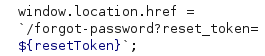
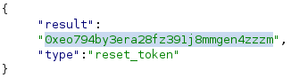

Exploiting server-side parameter pollution in a query string
- Provided with storefront website, told to log in as admin and delete user carlos
- Intercetped forgot password request in burpsuite
- Changed method to GET and sent
- Discovered forgotPassword.js located at /static/js/forgotPassword.js
- Sent GET request to location
- Discovered /forgot-password has parameter called reset_token:

- Tried polluting query in /forgot-password by appending %26foo. Got parameter is not supported
- Tried %23foo. Got Field not specified
- Tried %26field%3dtest. Got JSON response with invalid field
- Tried %26field&3dreset_token. Recieved reset token in response:

- Sent GET request to /forgot-password?reset_token=0xeo794by3era28fz391j8mmgen4zzzm
- Copied request as URL and pasted in browser
- Changed password
- Logged in with credentials “administrator:temp”
- Navigated to /admin
- Deleted user carlos and completed lab successfully: